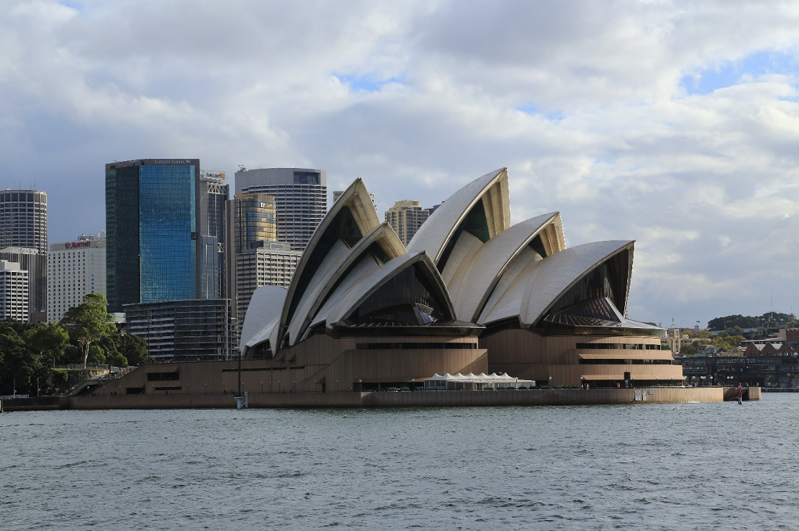
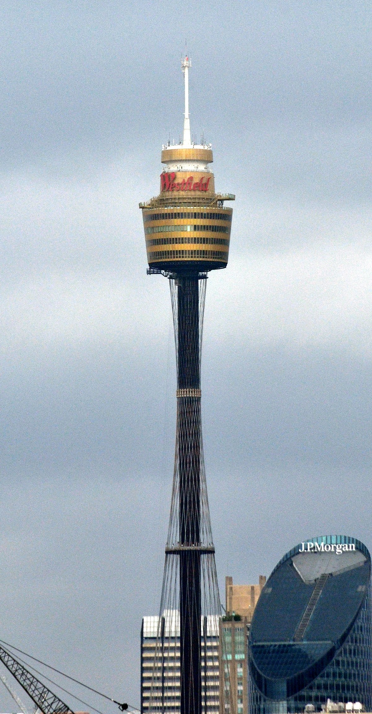
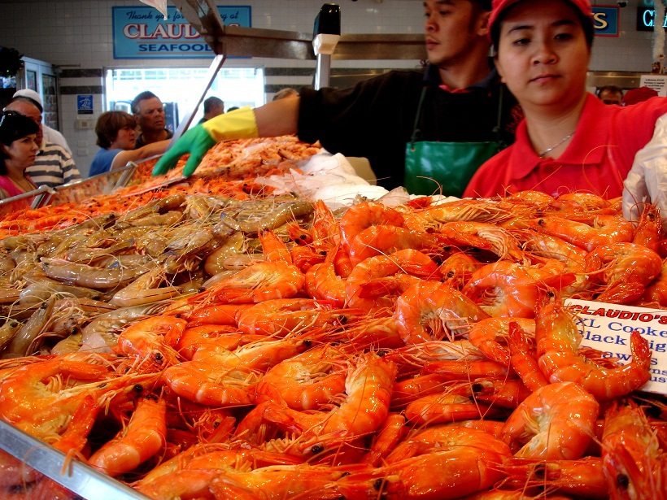

Start imaginating
your new journey
around Sydney
your new journey
around Sydney
Facts
Sydney receives over 10 million international and domestic visitors each year for its beaches and
attractions. Given its favourable weather, rich European history, vibrant economy and diverse lifestyle
options, it is not surprising that Australia's largest city is such a popular destination for tourist
and
migrants. However, Sydney is more than just the Opera House, Harbour Bridge and beaches.
Here are 15 interesting facts I picked up while in Sydney to share with travellers and locals who may
find
them interesting to share with family and friends.

1) The Sydney Harbour Bridge is the widest long-span bridge and tallest steel arch bridge in the world,
and the 5th longest spanning-arch bridge according to Guinness World Records.
2) It is the 12th most expensive city with property prices averaging USD8,717 per square metre.
3) The Sydney Mint built between 1811 and 1816 is the oldest public building in the Sydney Central Business District.
4) It is the capital of Australia's ICT industry, with 76 per cent of Australia's ICT regional headquarters and operating centres located in NSW.
5) The Sydney Tower was the tallest structure when it opened in 1981, and still is the second tallest freestanding structure in all of Australia at 1,001 feet over the Sydney CBD.
2) It is the 12th most expensive city with property prices averaging USD8,717 per square metre.
3) The Sydney Mint built between 1811 and 1816 is the oldest public building in the Sydney Central Business District.
4) It is the capital of Australia's ICT industry, with 76 per cent of Australia's ICT regional headquarters and operating centres located in NSW.
5) The Sydney Tower was the tallest structure when it opened in 1981, and still is the second tallest freestanding structure in all of Australia at 1,001 feet over the Sydney CBD.

6) The Harbour Bridge is known by the locals as "The Coat Hanger" due to its distinct shape.
7) Cadman's Cottage built in 1816 is the oldest house in Sydney located in The Rocks.
8) It was the site of the 1st European colony in 1788 when convict-bearing ships of the first fleet came from England to set up the colony of New South Wales.
9) English, Arabic, Cantonese, Mandarin, Greek and Vietnamese are the main languages spoken in Sydney.
10) It was in the Guinness Book of Records for producing the longest line of pizzas at 221 metres in the Italian quarter of Leichardt.
7) Cadman's Cottage built in 1816 is the oldest house in Sydney located in The Rocks.
8) It was the site of the 1st European colony in 1788 when convict-bearing ships of the first fleet came from England to set up the colony of New South Wales.
9) English, Arabic, Cantonese, Mandarin, Greek and Vietnamese are the main languages spoken in Sydney.
10) It was in the Guinness Book of Records for producing the longest line of pizzas at 221 metres in the Italian quarter of Leichardt.

11) Cricket is the most popular summer sport in Sydney and the city will host games in the 2015 Cricket
World Cup.
12) Australia's largest outdoor sculpture exhibit, "Sculpture by the Sea", began at Bondi Beach in 1996.
13) The Sydney Fish Market is the largest market of its kind in the Southern Hemisphere and the world's 3rd largest fish market.
14) George Street is the oldest street in the whole of Australia.
15) It accounts for about 1/3 of the employment in Australia's finance industry with 65% of Australia's finance industry located here including banks (domestic & foreign), financial services, insurance, funds management and stockbroking firms.
12) Australia's largest outdoor sculpture exhibit, "Sculpture by the Sea", began at Bondi Beach in 1996.
13) The Sydney Fish Market is the largest market of its kind in the Southern Hemisphere and the world's 3rd largest fish market.
14) George Street is the oldest street in the whole of Australia.
15) It accounts for about 1/3 of the employment in Australia's finance industry with 65% of Australia's finance industry located here including banks (domestic & foreign), financial services, insurance, funds management and stockbroking firms.